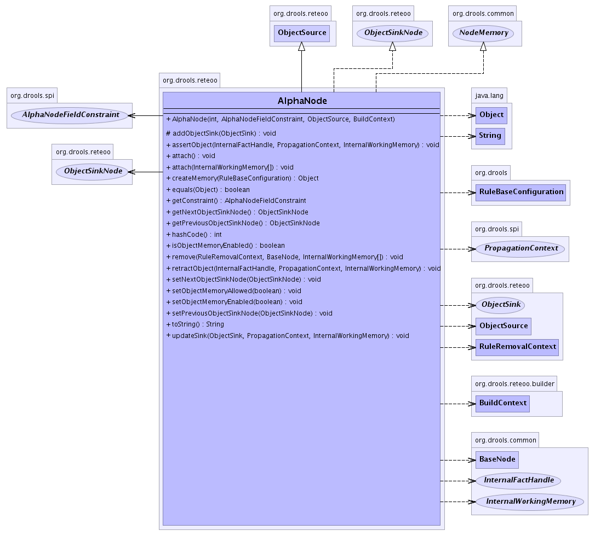

FieldConstraint<.code>s on asserted fact
objects where the FieldConstraints have no dependencies on any other of the facts in the current Rule.
- See Also:
AlphaNodeFieldConstraint,
Serialized Form
-
- 
| Fields inherited from class org.drools.common.BaseNode |
id |
| Methods inherited from class java.lang.Object |
clone, finalize, getClass, notify, notifyAll, wait, wait, wait |
AlphaNode
public AlphaNode(int id,
AlphaNodeFieldConstraint constraint,
ObjectSource objectSource,
BuildContext context)
- Construct an
AlphaNode with a unique id using the provided
FieldConstraint and the given ObjectSource.
Set the boolean flag to true if the node is supposed to have local
memory, or false otherwise. Memory is optional for AlphaNodes
and is only of benefic when adding additional Rules at runtime.
- Parameters:
id - Node's IDconstraint - Node's constraintsobjectSource - Node's object sourcehasMemory - true if node shall be configured with local memory. False otherwise.
getConstraint
public AlphaNodeFieldConstraint getConstraint()
- Retruns the
FieldConstraint
- Returns:
FieldConstraint
attach
public void attach()
- Description copied from class:
BaseNode
- Attaches the node into the network. Usually to the parent
ObjectSource or TupleSource
- Specified by:
attach in class BaseNode
attach
public void attach(InternalWorkingMemory[] workingMemories)
- Specified by:
attach in class BaseNode
assertObject
public void assertObject(InternalFactHandle handle,
PropagationContext context,
InternalWorkingMemory workingMemory)
throws FactException
- Description copied from interface:
ObjectSink
- Assert a new
FactHandleImpl.
- Specified by:
assertObject in interface ObjectSink
- Throws:
FactException- Parameters:
handle - The asserted FactHandle/code>.context - The PropagationContext of the WorkingMemory action.workingMemory - the WorkingMemory session.
retractObject
public void retractObject(InternalFactHandle handle,
PropagationContext context,
InternalWorkingMemory workingMemory)
- Description copied from interface:
ObjectSink
- Retract an existing
FactHandleImpl.
- Specified by:
retractObject in interface ObjectSink
- Parameters:
handle - The FactHandle/code> to retract.context - The PropagationContext of the WorkingMemory action.workingMemory - the WorkingMemory session.
updateSink
public void updateSink(ObjectSink sink,
PropagationContext context,
InternalWorkingMemory workingMemory)
- Specified by:
updateSink in class ObjectSource
remove
public void remove(RuleRemovalContext context,
BaseNode node,
InternalWorkingMemory[] workingMemories)
- Description copied from class:
BaseNode
- Removes the node from teh network. Usually from the parent
ObjectSource or TupleSource
- Specified by:
remove in class BaseNode
setObjectMemoryAllowed
public void setObjectMemoryAllowed(boolean objectMemoryAllowed)
isObjectMemoryEnabled
public boolean isObjectMemoryEnabled()
- Specified by:
isObjectMemoryEnabled in interface ObjectSink
setObjectMemoryEnabled
public void setObjectMemoryEnabled(boolean objectMemoryEnabled)
- Specified by:
setObjectMemoryEnabled in interface ObjectSink
createMemory
public java.lang.Object createMemory(RuleBaseConfiguration config)
- Creates a HashSet for the AlphaNode's memory.
- Specified by:
createMemory in interface NodeMemory
addObjectSink
protected void addObjectSink(ObjectSink objectSink)
- Description copied from class:
ObjectSource
- Adds the
ObjectSink so that it may receive
FactHandleImpl propagated from this
ObjectSource.
- Overrides:
addObjectSink in class ObjectSource
- Parameters:
objectSink - The ObjectSink to receive propagated
FactHandleImpl.
toString
public java.lang.String toString()
- Overrides:
toString in class BaseNode
hashCode
public int hashCode()
- Description copied from class:
BaseNode
- The hashCode return is simply the unique id of the node. It is expected that base classes will also implement equals(Object object).
- Overrides:
hashCode in class BaseNode
equals
public boolean equals(java.lang.Object object)
- Overrides:
equals in class java.lang.Object
getNextObjectSinkNode
public ObjectSinkNode getNextObjectSinkNode()
- Returns the next node
- Specified by:
getNextObjectSinkNode in interface ObjectSinkNode
- Returns:
- The next ObjectSinkNode
setNextObjectSinkNode
public void setNextObjectSinkNode(ObjectSinkNode next)
- Sets the next node
- Specified by:
setNextObjectSinkNode in interface ObjectSinkNode
- Parameters:
next - The next ObjectSinkNode
getPreviousObjectSinkNode
public ObjectSinkNode getPreviousObjectSinkNode()
- Returns the previous node
- Specified by:
getPreviousObjectSinkNode in interface ObjectSinkNode
- Returns:
- The previous ObjectSinkNode
setPreviousObjectSinkNode
public void setPreviousObjectSinkNode(ObjectSinkNode previous)
- Sets the previous node
- Specified by:
setPreviousObjectSinkNode in interface ObjectSinkNode
- Parameters:
previous - The previous ObjectSinkNode
 org.drools.common.BaseNode
org.drools.common.BaseNode